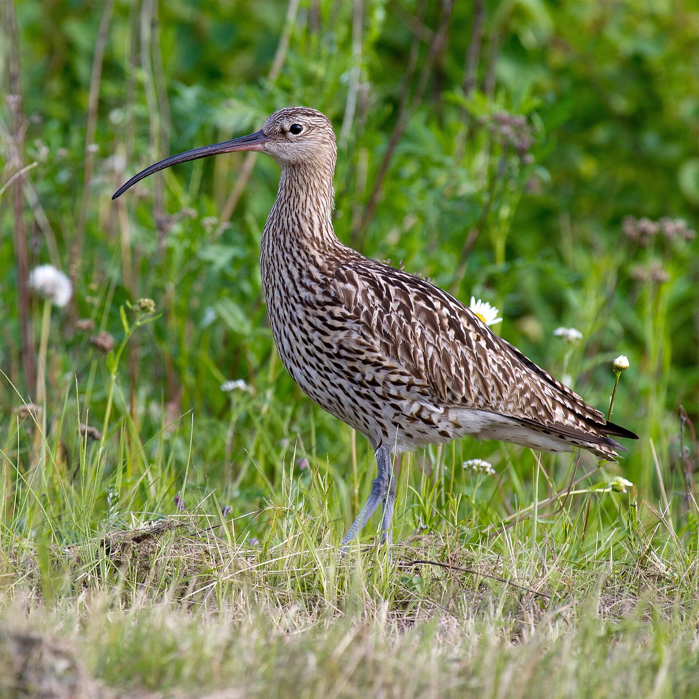

Back to the indexNO. 056 · Coast & Tidal Flats / Scolopacidae · Sandpipers & Snipes
Eurasian Curlew
白腰杓鹬 · bái yāo sháo yù Numenius arquataThe 'sickle shank' whose bill is beyond all proportion
Its bill is twice the length of its head and curves down in an elegant arc, sometimes 15 cm long. Standing on a mudflat, that long spoon is almost as conspicuous as the bird itself. The global population is falling, and the species is now Near Threatened.
Gallery
One scientific illustration for shape and colour blocks, two field photographs for how it looks in real light. Click any image to enlarge.
Identification
- BillExtremely long and clearly downcurved, up to 13–15 cm and longer in the female than the male — one of the longest bills among the waders.
- PlumageUpperparts grey-brown and densely streaked, underparts white, fine streaks on the sides of the neck and breast; plain in tone, identified by size and bill shape.
- RumpRump and uppertail coverts white, in flight a strong contrast with the dark back — the origin of the name.
- SizeA large wader, tall and long-legged, standing very upright.
Behaviour
It drives that long bill deep into the mud to reach crabs and worms well below the surface, the head almost buried as it feeds. Very alert, and it takes flight at a hundred metres. A winter visitor in South China in small numbers, usually alone or three or five birds among other waders. Global numbers continue to fall through the reclamation of tidal flats.
Voice
A loud, rising 'cur-lee' or 'coor-li', round in tone and instantly recognisable on a mudflat.
Where to find it in Zhuhai
- Jinwan tidal flats
- Qi'ao Island outer flats
- Hengqin estuary
- Doumen coastal mudflats